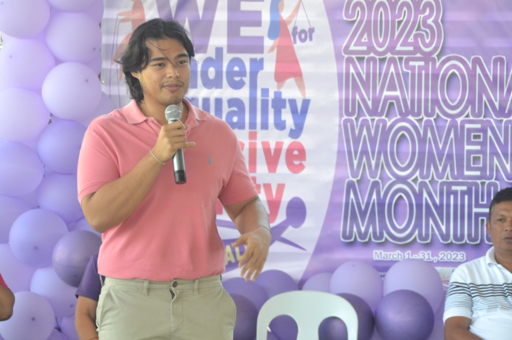

PROVISION OF BARANGAY ISOLATION UNIT IN BARANGAY KIDADAN
Kier Diantan, LCR
Dated: March 7, 2023 | Monday


The discussion of the Guest Speaker, Atty. Ma. Febes Barlaan highlighted the rights power of every women in the area of gender equality and inclusive society. The IP Women and KALIPI Associations were also fortunate to receive amounting to One million for their respective projects. These associations are grateful to Mayor Dinko Bautista as this is a first in the history to have received this support.
This celebration was spearheaded by MSWD Office headed by Mrs. Romelyn Magallanes RSW and all Kalipunan ng Liping Pilipina (KALIPI) Women's Association of all twenty two (22) Barangays and IP Women in the Municipality. The activity started with a parade of Women Associations and IP Women.
The celebration was also graced by Mayor Dinko Bautista where he specified the importance of women in the society and how powerful the contribution of women has made to the Municipality and was also attended by SB Members, LGU employees and visitors.
ğŸğ¬ğ 𝐐𝐔𝐀𝐑𝐓𝐄𝐑 𝐍𝐀𝐓𝐈𝐎𝐍𝐀𝐋 𝐒𝐈𝐌𝐔𝐋𝐓𝐀𝐍𝐄𝐎𝐔𝐒 𝐄𝐀𝐑𝐓𝐇𝐐𝐔𝐀𝐊𝐄 𝐃𝐑𝐈𝐋𝐋 (𝐍𝐒𝐄𝐃) 𝟐𝟎𝟐𝟑
Kier Diantan, LCR
Dated: March 7, 2023 | Monday
Pursuant to NDRRMC Memorandum no. 86 s. 2023, the Provincial DRRM Council member agencies and Local DRRM Councils facilitated the 2023 1st Quarter National Simultaneous Earthquake Drill (NSED) today. There were 4 areas of this drill namely, LGU of Sta. Maria, Heracleo Casco Memorial National High School, Don Pedro National High School and Basiawan National High School.
This Earthquake drill was simultaneous in nature and HCMNHS was selected as the main highlight of the activity. The real-life drill started with a 7.5 magnitude earthquake which hit the Municipality of Sta Maria. All employees and students followed the duck, cover and hold procedure and immediately evacuated outside the buildings. The flow commenced from the hit of the Earthquake, to rescue operation, affected victims identification and evaluation.
The participating schools and the Local Government of Sta. Maria are thankful to Mayor Dinko Bautista for allowing this Natural Disaster Preparedness Training to happen in the Municipality. To Provincial and Municipal DRRMO, Provincial and Municipal Health Office, PNP, BFP, AFP, DILG, Barangay Council of Poblacion, Barangay Tanod, HPG, and Municipal Operation Center, thank you so much for making this activity successful.

 𝟐𝟎𝟐𝟑.png)
 𝟐𝟎𝟐𝟑3.png)
 𝟐𝟎𝟐𝟑4.png)
 𝟐𝟎𝟐𝟑2.png)